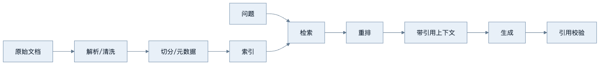
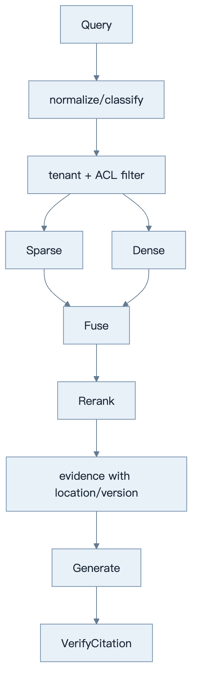
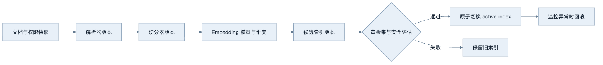
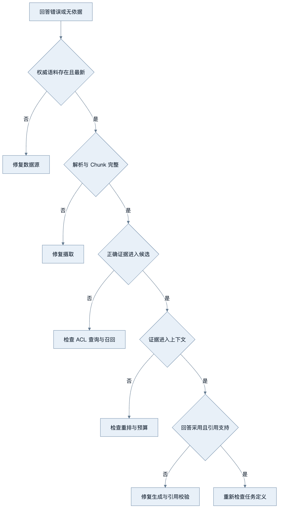
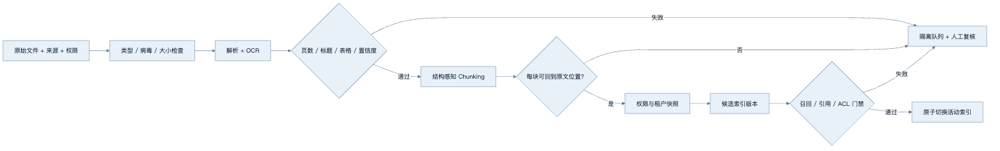

第13章：RAG 基础
最后核对日期：2026-07-11。
导读、目标与前置知识
RAG 在生成前检索外部资料，适合知识频繁变化且需要引用的任务。本章覆盖加载、解析、切分、Embedding、索引、检索、重排、增强和引用。前置知识为第5章。
学习目标是掌握完整链路的核心边界，并能从常见误区和失败 Trace 定位质量问题。
原理与架构图
RAG 包含离线摄取与在线查询两条相交链路。下图先展示端到端主路径，后续图再拆解权限、索引版本与故障定位。

RAG 与微调不同：RAG 在调用时提供证据，便于更新和引用；微调主要改变参数行为。二者可以组合。
最小实验
最小系统处理 Markdown，返回 top-k 片段及文档 ID。工程版记录解析器、切分器、Embedding 和索引版本，支持增量更新、删除、权限过滤、引用定位和评估。生成 Prompt 要求只依据证据、缺证时拒答，并把事实句关联来源。
这个最小示例不直接调用模型，而是验证“证据不足必须拒答”的确定性门禁。检索分数本身不可跨模型解释，因此示例使用业务校准后的最低证据分和最少证据数；阈值必须从评估集得到，不能照抄。
from dataclasses import dataclass
@dataclass(frozen=True)
class Evidence:
chunk_id: str
document_id: str
version: str
location: str
text: str
relevance: float
authority: int
@dataclass(frozen=True)
class EvidenceDecision:
answerable: bool
evidence: tuple[Evidence, ...]
reason: str | None = None
def select_answerable_evidence(
candidates: list[Evidence],
*,
minimum_relevance: float,
minimum_count: int = 1,
) -> EvidenceDecision:
selected = tuple(
sorted(
(
item
for item in candidates
if item.relevance >= minimum_relevance and item.authority > 0
),
key=lambda item: (-item.authority, -item.relevance, item.chunk_id),
)
)
if len(selected) < minimum_count:
return EvidenceDecision(False, (), "insufficient_evidence")
return EvidenceDecision(True, selected)
authority 不是让模型凭语气判断权威，而是摄取时由数据治理规则生成，例如正式制度高于个人草稿、当前版本高于已归档版本。门禁只能说明“候选满足进入生成阶段的最低条件”，不能保证证据一定支持最终主张；后续仍需 Citation Validator 和 Faithfulness 评估。
def test_refuses_when_no_authoritative_evidence() -> None:
candidates = [
Evidence("c1", "draft", "v1", "line 2", "个人猜测", 0.92, 0)
]
decision = select_answerable_evidence(
candidates, minimum_relevance=0.7
)
assert decision.answerable is False
assert decision.reason == "insufficient_evidence"
检索接口必须把租户过滤和引用元数据放进类型契约，而不是只返回一组字符串：
from pydantic import BaseModel
class RetrievedChunk(BaseModel):
tenant_id: str
document_id: str
chunk_id: str
page: int
text: str
score: float
def retrieve(query: str, *, tenant_id: str, top_k: int = 5) -> list[RetrievedChunk]:
"""先执行 tenant/ACL 过滤，再进行检索与重排。"""
...
省略 tenant_id 并在生成后删除敏感句子，不是可靠的权限控制；未授权内容一旦进入上下文就已经形成数据泄露风险。
失败、调试、实践与安全
失败包括坏文档、OCR 错误、切分断裂、查询不匹配、召回不足、重排错误和模型忽略证据。调试必须保存每阶段候选。RAG 不适合强事务查询、简单结构化数据库问题或无可靠语料场景。文档可能包含间接注入，权限过滤必须在检索层执行。
数据摄取与文档质量
RAG 的上限首先由语料决定。摄取阶段保存原始文件哈希、来源 URI、版本、权限、解析器版本和时间。PDF 可能是文本层、扫描图像或两者混合；Word、PPT 和 Markdown 的标题、表格、备注与链接结构也不同。解析器不能只返回一串无位置文本，否则引用无法回到页码或幻灯片。
清洗去除重复页眉页脚、导航和乱码，但不应删除否定词、单位和表格表头。OCR 结果保存置信度与坐标，低置信页面进入人工检查。文档更新采用新版本并使旧 Chunk 失效，删除请求同时清理原文、向量、缓存和派生摘要。
Chunk、索引与检索
Chunk 需要自包含但不过度宽泛。技术手册常按标题层级与段落切分，表格把表头复制到每个相关块，代码按函数或类边界切分。Overlap 只在边界确有上下文损失时使用。每块 Metadata 包含文档、章节、页码、版本、时间、语言、租户和权限。
检索前先做权限过滤和查询分类。Retriever 是执行候选召回的组件：稀疏检索对故障码、产品号和专有词敏感，稠密检索处理语义改写，混合检索可通过 Reciprocal Rank Fusion 等方法融合。初检取得较多候选，Reranker 对少量候选做更精细的 query-document 相关性判断。

索引不是一次性产物。Embedding 模型、维度、距离、切分器和预处理任何一项变化，都需要新索引版本。后台构建完成并通过评估后，再原子切换 active index；不要把不同 Embedding 空间的向量混在同一索引。

索引版本是文档、权限、解析、切分和向量空间的组合产物。任何一个组成部分变化都需要可比较的新版本，而不是混写旧集合。

这棵树避免把所有 RAG 问题归咎于 Prompt。只有证据已经正确进入上下文而模型仍误用时，生成层才是首要修复位置。
Prompt Augmentation 与 Citation
进入 Prompt 的片段带稳定引用 ID、标题、位置和时间，并明确声明它们只是数据。模型被要求每个事实主张引用一个或多个证据，缺少证据时拒答。生成后 Citation Validator 确认引用 ID 存在、用户仍有权限，并可选检查引用片段是否支持主张。
Grounding 指利用可追溯外部数据约束回答的事实基础，它不等同于“答案末尾带有链接”。Citation 解决来源定位，Faithfulness 检查主张是否得到所引证据支持，而 Grounding 还要求证据来自适当权限范围、版本和时间点。一个回答可能引用了真实文档，却误读文档或把过期版本当成当前事实；这时 Citation 存在，但 Grounding 仍然失败。工程上应分别记录检索命中、证据采用、主张—证据支持关系和无依据拒答，不能用单一“引用率”代替这些检查。
回答末尾随意列几个来源不是可靠 Citation。引用应靠近对应主张，区分直接证据和模型推断。若两个来源冲突，回答说明冲突与各自时间，不把较新或较长来源默认当真。引用页面还应允许用户查看被使用的原文范围。
工程案例
摄取 Worker 与在线查询服务分离。文档进入对象存储，解析和切分产生版本化 Chunk，Embedding Worker 写新索引，完成后切换索引。查询服务读取当前索引，执行 ACL、检索、重排、上下文预算和生成。评估服务定期运行黄金集，发现回归时阻止索引或模型升级。
以企业制度问答为例，原始文件包括 PDF、Word 和扫描件。摄取并非“能抽出文本就成功”，而要经过解析质量门禁：页数是否一致、标题层级是否保留、表格表头是否关联到数据行、OCR 低置信区域是否标记、每个 Chunk 是否能回到原文位置。失败文件进入隔离队列，不写活动索引。

结构感知 Chunking 需要按文档类型处理。制度条款可以按标题和条款编号切分，表格行要携带表名与表头，幻灯片要保留页标题和演讲者备注的来源区别，代码文档按符号边界切分。固定长度仍可作为兜底，但不能先把所有结构抹平再期待 Embedding 恢复。
可追踪 Retrieval Trace
每个在线请求生成 query_id，记录规范化查询、索引版本、权限过滤摘要、初检候选、融合分数、重排分数、进入上下文的 Chunk、生成引用和最终拒答原因。为保护隐私，正文可只记录内容哈希与受控对象引用。
from pydantic import BaseModel, Field
class CandidateTrace(BaseModel):
chunk_id: str
sparse_rank: int | None = None
dense_rank: int | None = None
rerank_score: float | None = None
selected: bool = False
class RetrievalTrace(BaseModel):
query_id: str
tenant_id: str
index_version: str
candidates: list[CandidateTrace] = Field(default_factory=list)
context_chunk_ids: list[str] = Field(default_factory=list)
refusal_reason: str | None = None
这个 Trace 让团队回答“正确证据没被召回”“召回后被重排降权”“进入上下文但未被引用”三类完全不同的问题。若只保存最后的 Prompt，就无法知道候选阶段发生了什么；若只保存搜索分数，就无法解释生成阶段为何引用另一块。
引用生成与验证
Generator 接收的每个证据块带不可由模型修改的 chunk_id、文档版本和位置。模型输出结构化主张，每条主张列出引用 ID；渲染层再根据允许集合把 ID 转为链接。这样模型不能通过编造 URL 获得“有引用”的假象。
from pydantic import BaseModel, Field
class Claim(BaseModel):
text: str
citation_ids: list[str] = Field(min_length=1)
class GroundedAnswer(BaseModel):
claims: list[Claim]
unresolved: list[str] = Field(default_factory=list)
def validate_citations(answer: GroundedAnswer, allowed_ids: set[str]) -> None:
unknown = {
citation_id
for claim in answer.claims
for citation_id in claim.citation_ids
if citation_id not in allowed_ids
}
if unknown:
raise ValueError(f"回答引用了未提供的证据: {sorted(unknown)}")
这个校验只证明引用 ID 存在，不证明引用支持主张。Faithfulness 仍要用规则、模型 Judge 与人工抽检评价主张—证据关系。数字、日期和否定条件可以优先用确定性匹配做预检；高风险结论需要领域专家。
最小领域接口不应直接返回数据库行，而返回 RetrievedChunk(document_id, version, location, text, score)。Generator 只接收已授权 Chunk。最终 Answer 包含文本、引用、无法确认事项和索引版本，便于审计与重放。
Trace 记录 query、过滤器、候选 ID、稀疏/稠密/重排分数、进入上下文的片段、生成引用与耗时。正文和 query 按隐私策略脱敏或不落盘。指标分解为解析失败、索引新鲜度、Recall@k、无结果率、引用率、Faithfulness、P95 延迟与单查询成本。
失败分析与调试
回答错误时按链路定位：权威文档是否存在；解析是否完整；Chunk 是否保留关键表头；过滤是否误排；正确 Chunk 是否进入 top-k；Reranker 是否降权；上下文是否被截断；模型是否采用证据；引用是否支持主张。只有最后两步失败时，调整生成 Prompt 才是主要手段。
下面的故障表把症状绑定到可检查的证据：
| 症状 | 可能层次 | 首要证据 | 不应先做的事 |
|---|---|---|---|
| 文档里有答案但零结果 | 解析、Chunk、ACL 或召回 | 原文快照、解析输出、候选列表 | 立即增加 Prompt 长度 |
| 正确块排在第 30 名 | 查询、融合或向量模型 | 稀疏/稠密排名与分数 | 只调生成 Temperature |
| 正确块进入上下文但答错 | 上下文冲突或生成 | 最终证据序列、主张与引用 | 无限增大 top-k |
| 引用存在但不支持句子 | Citation/Faithfulness | 主张—证据配对 | 只检查 URL 能否打开 |
| 新制度上线仍答旧版本 | 索引发布与缓存 | 文档、索引和缓存版本 | 修改问题措辞 |
| 普通用户看到机密标题 | ACL 或缓存键 | 候选产生前的过滤条件 | 依赖模型拒绝输出 |
| 无资料时仍给确定答案 | 拒答门禁或评估缺失 | 证据充分性判定 | 用“请勿幻觉”代替门禁 |
解析质量要单独监控。若扫描 PDF 的 OCR 把 0.01 识别成 0.1，检索可能正常命中，但答案仍是错误的。黄金文件应包含表格、双栏、页眉页脚、扫描页、脚注和混合语言，并断言文本、结构与位置。解析器升级与 Embedding 升级一样需要回归测试。
RAG 不适合回答余额、库存、订单状态等强一致结构化事实，应调用业务 API；也不适合语料缺乏权威性或用户真正需要开放创作的场景。把所有业务统一到向量检索会损失精确性和事务语义。
安全注意事项与评估
权限过滤在检索查询中执行，不能检索后再让模型“不要透露”。文档可能含间接 Prompt Injection、恶意链接和个人数据；摄取时扫描，Prompt 中隔离，工具不因文档指令改变。多租户索引即使共库也必须强制 tenant 条件，缓存键同样包含租户与权限版本。
测试包含解析黄金文件、Chunk 边界、删除传播、ACL、检索指标、引用验证、注入文档和无答案拒答。评估集按真实问题分层，避免只用与文档标题高度相似的人工查询。检索层的 Recall@k 与最终回答正确率分别报告，不能用一个总分掩盖错误位置。
总结、练习、面试与延伸阅读
练习：为维修手册设计切分与引用；构造无法回答问题并验证拒答；用十个真实查询比较稀疏、稠密和混合检索。面试：RAG 为什么仍会幻觉？何时直接 SQL 优于 RAG？如何定位正确文档未进入最终回答的原因？延伸阅读：Lewis et al., Retrieval-Augmented Generation for Knowledge-Intensive NLP Tasks；目标解析器、Embedding 与向量库官方文档。代码目录：projects/04-knowledge-agent/。
练习参考答案
- 维修手册按车型、系统、故障码、检查条件和步骤形成父块，按具体步骤形成检索子块；表格行携带表头。引用包含手册版本、章节、页码或稳定锚点。更新手册时构建新索引并验证后切换，不能混合新旧 Chunk。
- 无法回答用例应包含“语料完全没有”“只有低权威草稿”“相关文档已撤权”“证据互相冲突”和“证据过期”。系统返回明确无法确认事项与可用证据，不生成填空式答案；测试断言 Generator 在门禁失败时根本不被调用。
- 十个查询必须来自真实分布并标注相关文档，三种检索使用相同语料快照、ACL 和 top-k。报告 Recall@k、MRR、P95 延迟与零结果率；Hybrid 只有在净收益满足发布阈值时才采用。
- RAG 仍会幻觉，因为证据可能不存在、解析错误、召回遗漏、重排错误、上下文冲突，或模型从正确证据推导出不受支持的主张。引用 ID 校验只能防编造来源，不能替代 Faithfulness。
- 余额、库存和订单状态等强一致数据应调用经过授权的业务 API 或 SQL 查询，因为向量索引可能延迟、近似并缺乏事务语义。RAG 更适合非结构化知识与来源解释，两者可以在同一 Agent 中按任务路由。
本章引用
以下资料用于支撑本章的核心原理、工程边界与版本敏感说明：